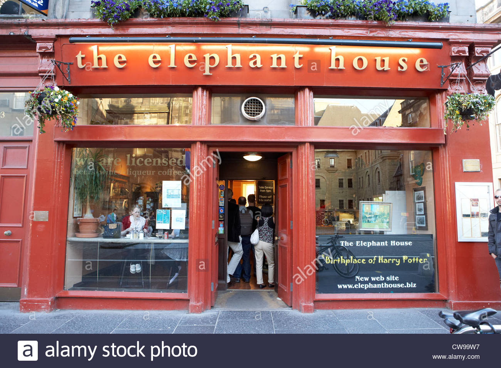

● 본명: 조앤 롤링(Joanne Rowling)
● 출생: 1965년 7월 31일(52세)
● 국적: 영국
● 대표작: 해리포터,신비한 동물사전
● 수상내역: 영국 도서상(올해의 작가 부문), 네슬레 스마티스상, 아스투리아스 왕세자상(평화 부문)

영국 남서부 브리스톨 주변 소도시에서 평범한 중하류층 가정의 딸로 태어났다. 어렸을 때부터 이야기를 짜는 것에 관심이 많았다. 평범하게 중·고등학교와 엑세터 대학 불문학과를 졸업하고 국제사면위원회에서 비정규직으로 일하고 있었다. 그러다 1990년 직장에서 잘리고, 어머니도 병으로 세상을 뜨면서 어쩔수 없이 포르투갈로 넘어가 영어교사로 일하기 시작했다. 여기서 현지 기자와 결혼해 딸까지 얻었지만 얼마 안가 이혼했다.
이혼 뒤, 영국으로 다시 건너와 에딘버러에 한부모 가정으로 정착했는데, 여기서부터 고난이 시작되었다. 제대로 된 수입이 없어서 주당 생활 보조금 70 파운드(한화 약 10만 원)로 근근이 먹고 살았다.
돈에 시달린 롤링은, 집 근처 카페인 엘리펀트 하우스(Elephant House) 구석 자리에서 예전부터 생각해온 아이디어를 가지고 해리포터와 마법사의 돌을 쓰기 시작했다. 원고를 완성한 뒤에도 출판사에서 계속 애들이 읽기에는 너무 길다고 거절당하고, 다른 출판사에서도 거절하여 12번 거절당한 끝에 마침내 크리스토퍼 리틀을 만나게 되어 , 1996년 13번째로 찾아간 소규모 출판사 블룸즈베리에서 1권을 500부 찍어 출판하게 되었고, 이후 유래없는 판매고를 기록하게 된다. 당연히 엘리펀트 하우스 카페는 조앤 롤링이 글을 쓰던 곳이라며 명소가 되었다.
이후 포브스가 집계한 2017년 세계 최고 소득 작가 순위에서 롤링은 연간 9천500만 달러(약 1천69억 원)를 벌어들여 1위를 차지했다.해리포터 시리즈완결 이후 5년 동안은 딱히 집필하는 건 없었다. 해리 포터의 후속작이나 판타지 장르는 절대로 쓰지 않을 거라고 한다. 해리 포터에 자신이 아는 모든 판타지에 관한 지식을 쏟아 부었기 때문에 이보다 좋은 작품을 쓸 자신이 없다고한다.